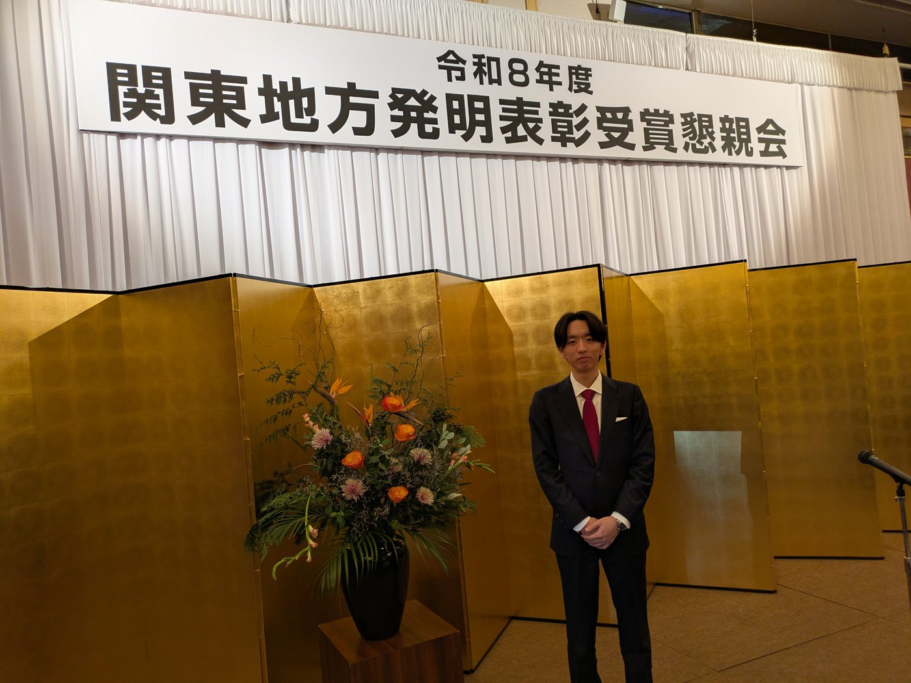

2026.11.19
令和８年度関東地方発明表彰で「発明奨励賞」を受賞しました
2026年11月5日に公益社団法人発明協会が発表した「令和８年度関東地方発明表彰」において、当社代表取締役の赤塚裕人が「発明奨励賞」を受賞しました。11月19日には宇都宮市で表彰式が開かれ、赤塚が出席しました。
受賞の対象は、赤塚がNTTドコモ在籍時に共同で発明した「ＡＩによる高精度な交通渋滞の予知（特許第7033515号）」です。本発明は、モバイルネットワークデータからリアルタイムに推計された当日の人口分布統計を用いて、数時間先の渋滞を実用精度で予測する技術です。
地方発明表彰は、公益社団法人発明協会が大正10年から実施している表彰で、全国を8つの地方に分け、実施されている優れた発明、考案又は意匠を生み出した技術者・研究開発者を顕彰するものです。
